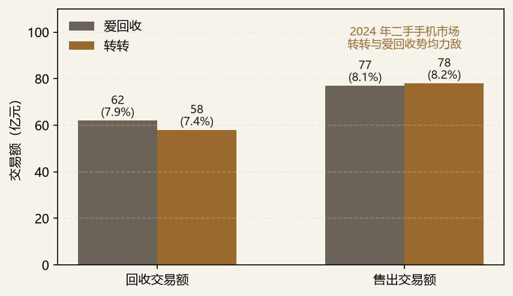
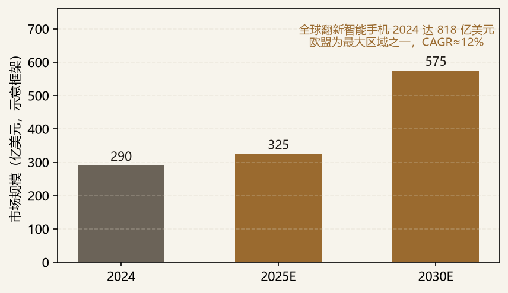
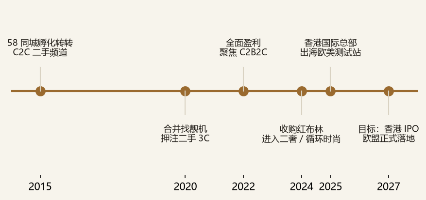

转转是中国循环经济赛道头部平台，2025 年营收突破 200 亿元，自 2022 年起持续盈利，拥有超 4 亿注册用户与约 5000 万月活。其核心 3C 二手业务已与爱回收形成势均力敌格局：2024 年二手手机售出端转转以 78 亿元（8.2%）反超爱回收 77 亿元（8.1%）。本备忘录的核心命题是转转的增长天花板在哪、第二曲线应如何落子——结论是从国内 3C 基本盘出发，由于供给充裕但渗透率低、竞争格局胶着、流量见顶，单靠国内难以支撑估值跃迁；而欧盟二手 3C / 翻新电子市场（2024 年全球翻新智能手机规模已达 818 亿美元、CAGR≈12.1%）在价差、环保政策与成熟消费习惯三重驱动下，是最具确定性的出海第一站。
核心判断：①3C 是底盘而非天花板，国内渗透率仅 5%、与爱回收份额差不足 1%，定位是现金流与信任壁垒；②国内市场已现瓶颈，月活仅为闲鱼零头、门店约为爱回收一半，价格战挤压利润，必须向外找增量；③欧盟是出海最优解，欧洲新品价格偏高、二手价差显著，且 Back Market（2025E GMV 破 30 亿欧元）已验证需求，转转的供应链成本优势与“官方验”信任模型可复制；④出海是 3–5 年期战略期权，应先以 B2B 供应链 + 香港国际总部试水，再逐步验证本地化平台。本篇与《转转战投视角：二手奢侈品赛道研究》互为姊妹篇，共同构成转转“非标品信任基础设施”出海的双引擎。
边界：不展开东南亚 / 中东等次要出海市场（采货侠已有小批量试水，但非本篇重点）；不讨论已关停的 C2C 自由市场；二手奢侈品出海的逻辑见姊妹篇《转转战投视角：二手奢侈品赛道研究》，本篇仅在第十二节作联动分析。
中国每年产生约 4 亿部废旧手机，累计存量超 20 亿部，但仅约 5% 进入正规回收渠道。这意味着 3C 二手是“供给极其充裕、渗透率极低”的市场，转转与爱回收的竞争本质是谁能更高效地获取并标准化这些分散供给。2024 年市场格局显示，两者已高度胶着：

转转在 3C 基本盘的核心护城河：
但短板同样明显：月活约 5000 万，仅为闲鱼（1.75 亿）的零头；线下门店数量约为爱回收（2195 家）的一半。因此 3C 基本盘的定位是“现金流与信任壁垒的练兵场”，而非无限增长引擎。
从转转自身的 3C 业务结构看，国内增长已现三重瓶颈，单靠内卷难以打开第二曲线：
与此同时，国内外价差提供了出海的经济动机：欧洲受通胀与汇率影响，新品手机价格显著高于国内，而二手 / 翻新设备价差更可观——同一台二手 iPhone，国内回收价经香港转口至欧洲批发，仍可保留可观毛利。这意味着“把国内过剩的二手 3C 供给，对接欧洲高价需求”是一条清晰的套利与价值释放通道。当国内是存量博弈、海外是增量蓝海，出海从“可选项”变为“必选项”。
在众多出海目的地中，欧盟是转转 3C 业务的最优解，理由有四：
综上，欧盟不是“随便试试”的市场，而是需求真实、政策友好、且能与转转供应链优势共振的确定性方向。
全球翻新智能手机市场 2024 年规模已达 818 亿美元，预计 2024–2034 年 CAGR 约 12.1%；欧洲是全球最大区域之一。结构上呈现三个特征：

对转转而言，欧盟市场不是空白，而是“有需求、有对标、但缺中国供应链 + 官方验玩家”的市场——这正是切入点。
| 玩家 | 定位 | 核心优势 | 对转转的启示 / 威胁 |
|---|---|---|---|
| Back Market | 翻新电子 B2C 龙头 | 2025E GMV 30 亿欧元、17 国、强信任标准 | 直接对标；转转供应链成本更低，但品牌与售后网络落后 |
| Swappie | iPhone 翻新专家 | 聚焦苹果生态、本地化售后 | 可作为合作或被并购标的，快速获取合规与售后能力 |
| Refurbed | 区域翻新平台 | 中欧本地化、品类较宽 | 并购可缩短本地化路径，换时间换合规 |
| Amazon Renewed / eBay | 综合二手频道 | 流量、物流、信任基础设施 | 最大威胁来自平台入口；转转需差异化“官方验 + 中国供给” |
| Vinted / TikTok Shop | 二手时尚 / 内容电商 | 社区或流量优势 | 时尚领域非转转主战场，但需警惕其向电子延伸 |
竞争结论：欧盟二手电子没有“一统江湖”的玩家，Back Market 虽强但集中于翻新标准与流量，并未垄断供给。转转应避开 Vinted 统治的时尚领域，以3C / 翻新电子 + 中国供应链成本优势为切口，用“官方验 + 数据清除认证”建立差异化信任。
转转的国际化并非从零开始。采货侠已从深圳经香港发货十几万台二手手机，销往越南、中东、欧洲、南美；黄炜明确表示已搭建测试网站并小规模交易。基于现有动作，我们提出三阶段路径：
以全球翻新智能手机 2024 年 818 亿美元、欧盟约占 35% 份额估算，欧盟市场约 290 亿美元（图 2 示意框架）。若转转通过 B2B + 跨境 B2C 在 2030 年取得 0.5%–1% 份额，对应约 1.5–2.9 亿美元收入；若实现本地化闭环并提升至 2%–3%，则可达 6–9 亿美元，成为可独立估值的业务线。
中国每年 4 亿部废旧手机、存量 20 亿部，按 5% 正规回收率、单台回收均价 1000 元估算，当前正规回收市场规模约 2000 亿元；若渗透率提升至 15%，对应 6000 亿元。转转若维持 7%–8% 份额，国内 3C 业务仍有 2–3 倍空间——但这是慢变量，需靠信任建设而非价格战。

| 情景 | 概率 | 关键触发 | 对转转估值影响 |
|---|---|---|---|
| Bull | 20% | 欧盟本地化平台成功；官方验模型被欧洲用户接受；并购 Back Market 级标的；香港 IPO 高估值 | 第二曲线确立，估值向 500 亿+ 人民币跃迁 |
| Base | 55% | 3C 基本盘稳健；B2B + 跨境 B2C 跑通；欧盟本地化进展缓慢但持续 | 估值稳中有升，香港 IPO 按 30–50 亿美元区间推进 |
| Bear | 25% | 国内 3C 价格战加剧；欧盟合规成本超预期；流量成本高企；IPO 推迟 | 估值承压，出海期权价值打折 |
本篇与《转转战投视角：二手奢侈品赛道研究》是转转出海战略的一体两面，二者在供应链、信任与战略上深度复用：
联动结论：转转的欧盟故事不是“卖二手手机”或“卖二手包”的二选一，而是以官方验信任模型为内核、以 3C 与二奢为两翼的出海平台。
作为转转战略投资部内部研究，本备忘录对公司的战略含义可归纳为六点：
| 数据/观点 | 来源 |
|---|---|
| 转转 2025 营收、盈利、用户数、月活、估值、香港总部 | 新浪财经 / 南方+ / 香港商报（2026.4–6） |
| 二手手机市场份额（回收 / 售出） | 弗若斯特沙利文 / 闪回科技招股书（cited in 腾讯新闻 / 南方都市报） |
| 中国废旧手机存量与回收渗透率、质检中心 / 门店数 | 中国循环经济协会 / 南方都市报 / 新浪专访（2025–2026） |
| Adisa 数据清除认证、AI 事业部 | 香港商报 / 新浪财经（2026.6） |
| 全球翻新智能手机 818 亿美元、CAGR 12.1% | CCS Insight / ESG跨境（2024–2025） |
| Back Market 2025E GMV 30 亿欧元、17 国、翻新占新机 4%→36% | Back Market 2025 业务更新 / 10100 跨境 |
| 采货侠 B2B 出海、香港 / 迪拜团队 | 每日经济新闻（2025.3） |
| 欧盟 WEEE / 电池法 / 绿色协议政策背景 | 欧盟委员会公开文件（综合） |
本报告所有规模 / 融资 / 倍数数据均来自 2026 年公开来源整理，部分市场规模的欧盟拆分（图 2）为基于全球总量与区域份额的示意框架，不构成投资建议；正式决策须以最新招股书、Wind 及公司公告核实并标注来源。欧盟市场预测存在口径差异（B2C vs C2C、新品 vs 翻新），使用时须对齐定义。